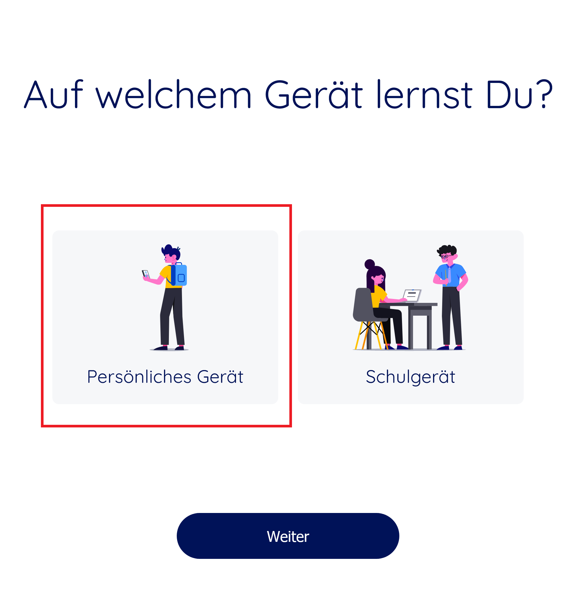
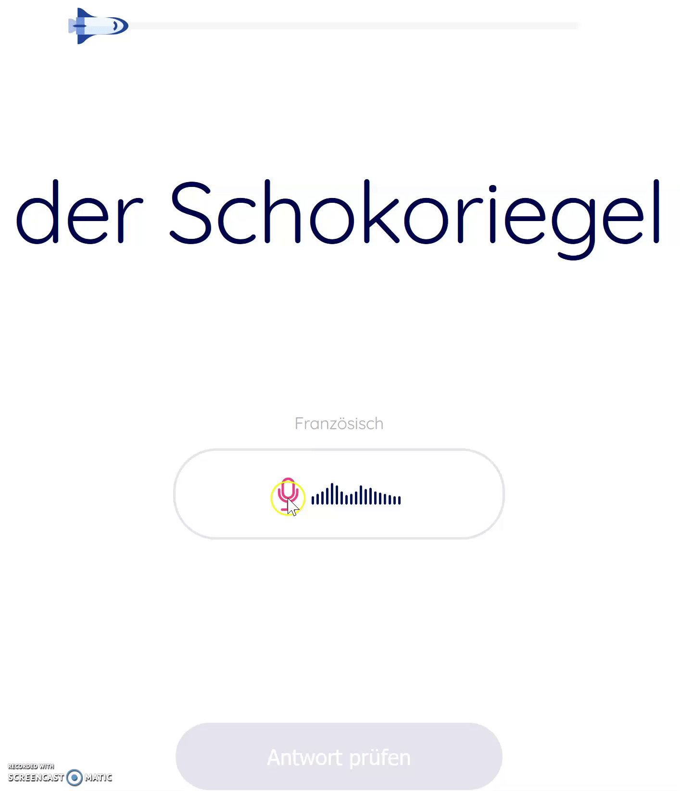

Allgemeine Fragen
Technische Fragen
Benachrichtigungen werden nur gesendet, wenn Sie die native mobile Version der App verwenden und bei der Anmeldung angeben, dass Sie sie auf einem persönlichen Gerät verwenden. Melden Sie sich dazu ab und melden Sie sich erneut an. Nach dem erneuten Verbinden sehen Sie den unten abgebildeten Bildschirm. Stellen Sie sicher, dass Sie “persönliches Gerät” auswählen, um den Empfang von Benachrichtigungen zu ermöglichen. Erinnerungen werden gesendet, nachdem Sie eine erste Lerneinheit mit der mobilen App abgeschlossen haben.
Es ist auch möglich, dass Sie trotz des Hinweises auf die Verwendung eines persönlichen Geräts dennoch keine Benachrichtigung erhalten. Dies passiert z.B., wenn Sie einen Web-Browser verwenden, um auf die App zuzugreifen, entweder von einem Computer oder von Ihrem mobilen Gerät aus. Dies ist völlig normal, da Benachrichtigungen nur dann gesendet werden, wenn Ihr Browser dauerhaft auf der Seite stellar-learning.app geöffnet bleibt. Wenn Sie Benachrichtigungen erhalten möchten, raten wir Ihnen, die native App für Smartphone oder Tablet zu verwenden. Sie können diese direkt aus dem App Store oder Google Play store herunterladen.
Um das Mikrofon auf dem Tablet oder Smartphone optimal zu nutzen, gehen Sie wie folgt vor:
1. Drücken und halten Sie die Aufnahmetaste (neben dem Mikrofonbild)
2. Wenn das Mikrofonbild zu blinken beginnt, warten Sie einen Moment und beginnen Sie zu sprechen
3. Lassen Sie den Finger los, nachdem Sie zu Ende gesprochen haben, das Symbol hört auf zu blinken
Um das Mikrofon optimal an einem Computer zu nutzen, gehen Sie wie folgt vor:
1. Klicken Sie einmal auf die Aufnahmetaste (Mikrofonbild)
2. Wenn das Mikrofonbild zu blinken beginnt, warten Sie einen Moment und beginnen Sie zu sprechen
3. Klicken Sie erneut auf die Aufnahmetaste, nachdem Sie zu Ende gesprochen haben, das Symbol hört auf zu blinken
Sie können sich auch das folgende Animation ansehen, um eine Demonstration der Verwendung des Mikrofons bei der Verwendung von stellar-learning.app mit einem Browser zu sehen.
Fragen zu Verbindungsproblemen
Bei Ihrem Benutzernamen und Passwort wird zwischen Gross- und Kleinschreibung unterschieden. Das bedeutet, dass sie genau dem entsprechen müssen, was Sie bei der Registrierung angegeben haben und die Gross- und Kleinschreibung beachten müssen. Auch das Vorhandensein von zusätzlichen Leerzeichen kann die Verbindung unmöglich machen. Wenn Ihr Benutzername zum Beispiel ‘‘tom1’’ lautet und Sie ‘‘Tom1’’ (Gross- statt Kleinschreibung beim T) oder ‘‘tom 1’’ (zusätzliches Leerzeichen zwischen ‘’m’’ und ‘‘1’') eingeben, können Sie keine Verbindung herstellen.
Wenn Sie nach der Überprüfung, dass das eingegebene Login und Passwort korrekt sind, sich aber immer noch nicht anmelden können, wenden Sie sich an die Adresse schulprojekt@fernuni.ch, um Ihr Login und Passwort zurückzusetzen. Bitte geben Sie den Benutzernamen, die Klasse und die Schule der betroffenen Schülerin oder des betroffenen Schülers an.